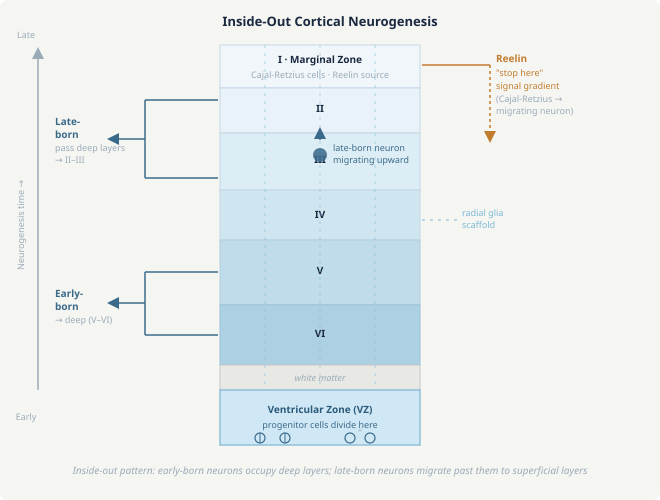

Neural Development
The human brain contains roughly 86 billion neurons connected by ~100 trillion synapses, and the entire structure assembles itself from a single fertilized cell over the course of prenatal development and early childhood. This is not random growth — it is a precisely orchestrated sequence of molecular events: induction, proliferation, migration, differentiation, axon pathfinding, synapse formation, and activity-dependent refinement. Understanding development explains why the brain is organized the way it is, why certain injuries are permanent while others recover, why early childhood experience shapes the brain in ways adult experience cannot, and why many psychiatric and neurological disorders originate during development rather than later in life.
The nervous system originates from a flat sheet of cells on the dorsal surface of the early embryo called the neural plate. Around gestational week 3 in humans, signals from the underlying notochord (primarily Sonic Hedgehog, SHH, and Noggin — a BMP inhibitor) induce the overlying ectoderm to adopt a neural identity rather than becoming skin.
The neural plate then folds inward to form the neural tube through a process called neurulation. The two lateral edges roll up, meet at the dorsal midline, and fuse, creating an enclosed tube that runs the length of the embryo. The anterior end expands to form the brain; the posterior portion becomes the spinal cord. The cavity inside becomes the ventricular system filled with cerebrospinal fluid.
Neural tube closure begins in the middle of the tube and zips both anteriorly and posteriorly. Failure of closure produces neural tube defects: anencephaly (failure to close anteriorly — lethal, the forebrain does not form) and spina bifida (failure to close posteriorly — varying severity, ranging from no symptoms to paralysis). Folate (vitamin B9) is critical for neural tube closure; folate deficiency is the leading preventable cause of neural tube defects, which is why supplementation during early pregnancy is universal medical advice.
As the tube closes, cells at the dorsal fusion point — the neural crest — detach and migrate throughout the body to form the peripheral nervous system (sensory ganglia, autonomic ganglia, Schwann cells), as well as non-neural structures (melanocytes, craniofacial cartilage and bone).
The anterior neural tube subdivides through a sequence of bulges and constrictions into the five secondary brain vesicles: telencephalon (cerebral cortex, basal ganglia), diencephalon (thalamus, hypothalamus), mesencephalon (midbrain), metencephalon (cerebellum, pons), and myelencephalon (medulla).
Neurons are born from progenitor cells lining the ventricular zone — the inner surface of the neural tube. These progenitors (neuroepithelial cells, then radial glial cells) divide asymmetrically: one daughter cell remains a progenitor, the other exits the cell cycle and becomes a post-mitotic neuron. The timing of exit determines cell fate — early-born neurons become deep cortical layers (V and VI), late-born neurons become superficial layers (II and III). This "inside-out" pattern means the cortex is built from the inside out.
Newly born neurons must travel from the ventricular zone to their final destination — in the cortex, a radial distance of several millimeters. They do this by radial migration: climbing along the elongated processes of radial glial cells like a ladder, using molecular adhesion molecules (e.g., Reelin, a glycoprotein secreted by Cajal-Retzius cells in the marginal zone, which signals "stop here" to incoming neurons).

Neurons are born in the ventricular zone and climb radial glia fibers. Early-born neurons settle deep; late-born neurons migrate past them. Reelin from Cajal-Retzius cells signals each wave to stop at the correct depth.
Reelin is critical: without it (as in the reeler mutant mouse), neurons fail to stop at the right depth and cortical layers are inverted. Mutations in Reelin or its downstream signaling components cause lissencephaly ("smooth brain") in humans — a severe malformation with few or no cortical folds (gyri), devastating cognitive impairment, and epilepsy.
Some neurons undergo tangential migration — moving parallel to the cortical surface rather than radially. Most inhibitory interneurons (GABAergic) are born in the ganglionic eminences of the ventral forebrain and migrate tangentially into the cortex, a remarkable journey guided by chemokines (CXCL12/CXCR4 signaling). This means excitatory cortical neurons and inhibitory interneurons have different birthplaces — a fact with important implications for understanding disorders where the E/I balance is disrupted (autism, epilepsy, schizophrenia).
Once a neuron reaches its destination, it must grow an axon to the right target — sometimes across centimeters of tissue in the developing brain. The tip of the growing axon, the growth cone, is a highly motile structure that samples the environment with filopodia (finger-like projections) and lamellipodia (sheet-like extensions). It steers toward or away from molecular signals in its environment.
Four categories of guidance cues navigate the growth cone:
- Contact attraction (e.g., L1 cell adhesion molecule): axons grow along surfaces that display attractive adhesion molecules, preferring certain cell surfaces or extracellular matrix components.
- Contact repulsion (e.g., Ephrins): axons are repelled from surfaces bearing these ligands. Ephrin-B/EphB receptor interactions create sharp boundaries — for instance, keeping retinal ganglion cell axons from the temporal retina out of the posterior tectum (the wrong target), producing the topographic map of the visual field.
- Chemoattraction (e.g., Netrins): diffusible molecules form gradients that attract growth cones from a distance. Netrin-1 attracts spinal commissural axons toward the floor plate (the midline), guiding them to cross to the other side. Netrin signals through the DCC receptor.
- Chemorepulsion (e.g., Semaphorins, Slits): diffusible repellents steer growth cones away. Slit proteins (secreted at the midline) bind Robo receptors on axons and repel them — preventing axons that have already crossed the midline from crossing back, and keeping ipsilateral axons from crossing at all.
The midline crossing decision is paradigmatic. Commissural axons initially express low levels of Robo1/2, making them insensitive to Slit repulsion — they approach and cross the midline. While crossing, they upregulate Robo1/2, which then makes them sensitive to Slit, propelling them away from the midline after a single crossing. This is a beautiful example of a developmental switch: a molecular change mid-journey that converts attraction to repulsion.
Retinotopic mapping — the point-by-point representation of visual space on the tectum (or visual cortex) — is established by Ephrin/Eph gradients. The nasal-to-temporal gradient of EphA receptors on retinal axons is matched by a posterior-to-anterior gradient of Ephrin-A ligands on the tectum. Axons with high EphA (temporal retina) are strongly repelled from high-Ephrin-A (posterior tectum) and settle anteriorly. Axons with low EphA (nasal retina) tolerate high Ephrin-A and reach the posterior tectum. The result: a continuous map of visual space.
Once axons reach the right neighborhood, they form synapses. Initial synapse formation is partially activity-independent — molecular recognition between pre- and postsynaptic cells drives initial contact, mediated by trans-synaptic adhesion molecules: Neuroligins (postsynaptic) bind Neurexins (presynaptic), recruiting scaffolding proteins (PSD-95 postsynaptically, RIM/Munc13 presynaptically) and organizing the active zone and postsynaptic density.
Mutations in Neuroligin-3 and Neuroligin-4 are among the most replicated genetic risk factors for autism spectrum disorder — consistent with the idea that synapse formation and refinement is central to the biology of autism.
The brain initially overproduces synapses and neurons massively. The excess is eliminated through two processes:
Apoptosis (programmed cell death): roughly half of all neurons born in the developing nervous system die before maturity, eliminating neurons that fail to compete for limited quantities of target-derived survival factors (neurotrophins). The best-studied is NGF (Nerve Growth Factor, discovered by Rita Levi-Montalcini, Nobel 1986): sympathetic neurons that successfully innervate target tissue receive NGF retrograde signaling via TrkA receptors, activating survival pathways. Those that fail to connect die. This "competition for neurotrophic support" ensures that the number of neurons is automatically matched to the size of the territory they innervate.
Synaptic pruning: excess synaptic connections are eliminated in an activity-dependent manner — weak, infrequently used synapses are preferentially removed. In the developing visual system, axons from both eyes initially both synapse onto the same lateral geniculate nucleus neurons. Over development, activity-dependent competition causes the inputs to segregate into eye-specific layers (ocular dominance columns form). This pruning is mediated partly by the complement system (C1q, C3) tagging weak synapses for elimination by microglia — an unexpected role for immune molecules in brain wiring (Stevens et al., 2007).
Perhaps the most important concept in neural development for understanding human experience is the critical period: a restricted window during which the nervous system is especially sensitive to specific environmental inputs, and during which experience shapes circuits in ways that are largely irreversible after the window closes.
The visual system provides the most studied example. Hubel and Wiesel's classic experiments in the 1960s showed that if one eye of a kitten is sutured closed during the critical period (roughly postnatal weeks 3–7 in cats), the visual cortex neurons that would normally respond to that eye dramatically shift their preference to the open eye. The deprived eye's cortical territory shrinks. This is monocular deprivation. If the same procedure is done in an adult cat, essentially nothing happens — the cortex does not rewire.
Critical periods are opened by the maturation of inhibitory circuits — specifically, parvalbumin-positive (PV) fast-spiking interneurons, which increase E/I ratio in the cortex and enable competitive Hebbian plasticity. They are closed by the consolidation of the extracellular matrix into perineuronal nets (PNNs) — dense lattices of chondroitin sulfate proteoglycans (CSPGs) that wrap around PV interneurons and structurally stabilize circuits. Enzymatic digestion of CSPGs with chondroitinase ABC can reopen critical period-like plasticity in adult animals — a finding with potential therapeutic implications for recovery from amblyopia (lazy eye) and stroke.
Critical periods are not the same for all systems. They occur at different times for different modalities and capacities:
- Binocular vision: postnatal months 1–3 in humans. Uncorrected strabismus or cataract during this period causes permanent amblyopia.
- Language phonology: birth to ~12 months. Infants can discriminate phonemes from any human language; this narrows to the native language by the end of the first year as non-native phoneme sensitivity is lost.
- Language acquisition: birth to ~7 years (sensitive period, not hard critical period). Children who experience language deprivation before ~7 (e.g., feral children, deaf children without sign language access) never acquire full grammatical competence.
- Absolute pitch: requires musical training before ~7 years.
- Social/emotional development: extended sensitive period, with the first few years especially important (Romanian orphanage studies showed lasting consequences of early social deprivation).
The existence of critical periods is both a vulnerability (early deprivation has lasting effects) and an opportunity (early intervention is maximally effective). Cochlear implants given to deaf children before age 3 allow substantially better language outcomes than implants given later; treatment of amblyopia must begin before the critical period closes.
Normal cortical development proceeds inside-out: early-born neurons form deep layers (VI then V), late-born neurons migrate past them to form superficial layers (IV, III, II). The "stop signal" for incoming neurons is Reelin, secreted by Cajal-Retzius cells in the marginal zone. Reelin is detected by ApoE receptor 2 (ApoER2) and VLDLR on migrating neurons, triggering phosphorylation of Dab1 (disabled homolog 1), which reorganizes the cytoskeleton and causes the neuron to detach from its radial glial guide and settle in place.
In reeler mice, this stop signal is absent. Late-born neurons cannot leapfrog past earlier-born neurons because the signal to "stop and settle" never comes. Instead, they pile up beneath the earliest-born neurons, and the cortex ends up in approximately the reverse of the normal layering pattern — an outside-in arrangement. The cortex is also smaller (hypoplasia) because migration failures cause cell death. The result is severe ataxia (cerebellar dysgenesis also occurs), tremor, and reeling gait, which is how the mutation was named long before the molecular mechanism was understood.
Before crossing: commissural axons express DCC (netrin receptor) but low levels of Robo1/2. Netrin-1, secreted from the floor plate, attracts them toward the midline via DCC. The low Robo expression means Slit repulsion (also from the floor plate) is weak — insufficient to prevent approach.
At the midline: as axons navigate through the floor plate, contact with floor plate cells upregulates Robo1 and Robo2 expression on the growth cone. The upregulation is triggered in part by the floor plate itself. At the same time, Robo3 (which had been suppressing Robo1/2 sensitivity to Slit) is downregulated.
After crossing: with high Robo1/2 and low Robo3, the axon is now strongly repelled by Slit emanating from the floor plate. This propels it away from the midline and prevents re-crossing. Additionally, Robo1 directly inhibits DCC signaling (they form a complex), so the attractive netrin signal is simultaneously silenced. The result is a molecular switch that converts a midline-attracted axon into a midline-repelled one — a one-way gate ensuring each commissural axon crosses exactly once.
Kitten 1 (deprivation during critical period, P28–35): This window falls squarely within the critical period for ocular dominance plasticity (roughly P21–P35 in cats, peak sensitivity ~P28). V1 neurons normally have a roughly equal response to both eyes. After monocular deprivation during this period, competitive Hebbian plasticity strongly shifts cortical responses toward the open eye. The closed eye loses the majority of its cortical representation — ocular dominance columns for the deprived eye shrink, those for the open eye expand. Even after the eye is reopened, the cortex does not recover spontaneously, because the critical period has closed (PNNs have formed, consolidating the altered synaptic weights). The animal is permanently amblyopic in the deprived eye despite normal retinal function.
Kitten 2 (deprivation after critical period, P90): The critical period is largely closed by P90. The same monocular deprivation produces minimal or no ocular dominance shift. V1 neurons retain their balanced binocular responsiveness. The adult cortex lacks the plasticity mechanisms that drive rapid competitive rewiring — PV interneuron maturation is complete, PNNs are established, and neuromodulatory (e.g., acetylcholine, serotonin) facilitation of plasticity is reduced. No permanent amblyopia results.
The difference is not in the visual experience (identical deprivation) but in the state of the cortex. The critical period is defined by the brain's state of plasticity, not by the age of the animal per se — which is why reactivating plasticity in adults (via CSPG digestion, dark-rearing, or pharmacological manipulation of the E/I balance) can partially restore monocular deprivation sensitivity.
-
The brain overproduces neurons and synapses massively, then eliminates half of them. Why not just make the right number in the first place?
This seems wasteful, but overproduction followed by selection is a powerful developmental strategy with several advantages. First, it decouples the problem of "how many neurons to make" from the problem of "how large is the target territory" — the target itself regulates how many neurons survive through retrograde neurotrophin signaling, automatically matching neuron number to target size without requiring precise genetic pre-specification. Second, it enables stochastic diversity: producing many neurons with slightly different properties, then selecting those that form the best connections, generates more reliable outcomes than trying to specify each neuron's fate precisely. Third, it allows experience to shape final circuitry — synaptic pruning driven by activity refines the initially exuberant connectivity into precise, efficient circuits. The cost in cellular resources is offset by the robustness and adaptability of the outcome. Evolution has apparently "decided" that building too much and pruning is more reliable than building exactly the right amount.
-
If critical periods are closed by perineuronal nets, and we can dissolve PNNs with chondroitinase, why can't we just reopen plasticity in adult stroke patients and help them recover?
The principle is sound and is actively being investigated. Chondroitinase ABC (ChABC) treatment in adult rats and mice after stroke or spinal cord injury does enhance recovery and axonal sprouting beyond what spontaneous recovery achieves. However, several major obstacles remain for clinical translation. First, the critical period is not just about removing a structural brake (PNNs) — it also requires the presence of plasticity-promoting factors (BDNF, neuromodulatory acetylcholine/serotonin) and the right E/I balance that characterized the juvenile brain. Dissolving PNNs in an adult brain that lacks these facilitating conditions may not recapitulate full juvenile plasticity. Second, not all plasticity is beneficial — reopening plasticity indiscriminately may destabilize consolidated memories and well-functioning circuits alongside the damaged ones. The goal is targeted, local, time-limited plasticity enhancement, not global rejuvenation. Third, delivery to specific brain regions is technically challenging. Several trials combining rehabilitation with pharmacological plasticity enhancement (SSRIs, which promote BDNF) are ongoing, representing a more conservative approach than full PNN dissolution.
-
Many autism risk genes (Neuroligin-3/4, Shank, CNTNAP2, etc.) are synaptic proteins. Does this mean autism is a "synaptic disease"?
The convergence of genetic risk on synaptic proteins is striking and real — perhaps 30% of high-confidence autism risk genes encode proteins involved in synapse formation, function, or development. But "synaptic disease" is both an insight and an oversimplification. The insight: this convergence suggests that disruption of synapse development, particularly the balance between excitatory and inhibitory synapses, is a common pathway through which many diverse genetic mutations produce similar behavioral phenotypes. The oversimplification: synaptic proteins function throughout development and throughout life — disrupting them during embryonic synaptogenesis has very different consequences than disrupting them in an adult brain. Furthermore, many autism risk genes affect other cellular processes (gene regulation, chromatin remodeling, protein translation) and their synaptic effects may be secondary. The E/I imbalance hypothesis remains one of the most influential frameworks, but it is a hypothesis about a shared downstream mechanism, not a complete explanation. The clinical diversity of autism (enormous range in cognitive ability, language, and behavioral features, even among individuals with the same mutation) suggests that the relationship between synaptic molecular changes and behavioral outcome is strongly moderated by genetic background, environmental factors, and developmental timing.
- Conflating critical periods with sensitive periods. A hard critical period has a sharp onset and offset with essentially binary plasticity. A sensitive period is a graded window where plasticity is enhanced but not all-or-nothing. Language acquisition is a sensitive period — effects of deprivation accumulate and recovery becomes progressively harder, but there is no single day when the window snaps shut. Vision's ocular dominance plasticity is closer to a true critical period with identifiable molecular gates.
- Thinking neurons migrate to random positions and then connect. The position a neuron occupies in the cortex is largely determined by when it is born — the inside-out rule is systematic, not random. Disrupting the timing of neurogenesis (e.g., with drugs that alter cell cycle length in progenitors) produces predictable laminar disruptions.
- Assuming axon guidance is purely genetic/hardwired. While molecular gradients provide the coarse map, activity-dependent competition refines it. The retinotopic map requires spontaneous retinal waves (correlated firing in the developing retina before visual experience begins) in addition to Ephrin gradients. Both components are necessary — block the waves with tetrodotoxin and the map degrades, even with intact Ephrin gradients.
- Thinking neurogenesis only happens prenatally. Adult neurogenesis occurs in two well-established niches: the subventricular zone (SVZ, contributing neurons to the olfactory bulb) and the dentate gyrus of the hippocampus. The functional significance of adult hippocampal neurogenesis for memory is actively debated, but its existence is well established in rodents and present (though reduced) in humans.
- Neuroscience — Synaptic Plasticity (Lesson 7): Adult synaptic plasticity (LTP/LTD) is the descendant of developmental plasticity mechanisms. NMDA receptors, AMPA receptor trafficking, and Hebbian rules operate in both contexts. Critical period plasticity uses the same molecular machinery as adult LTP but in a heightened, competitive context where small differences in activity drive large-scale structural changes.
- Neuroscience — The Visual System (Lesson 4): Ocular dominance columns, the clearest example of activity-dependent critical period refinement, develop in V1. The functional architecture of V1 (orientation columns, hypercolumns) is the end result of the developmental process described in this lesson — initial molecular specification followed by activity-dependent competition.
- Neuroscience — Glial Cells (Lesson 12): Microglia mediate synaptic pruning via complement tagging. Astrocytes secrete synaptogenic factors (thrombospondins) that promote initial synapse formation. The development of the brain is not a neuron-only process — glial cells are essential architects.